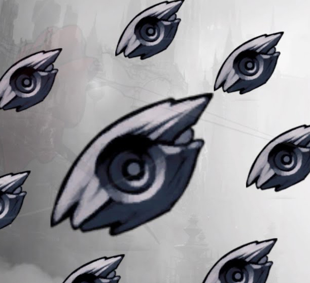
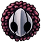
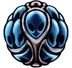
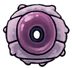
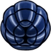
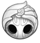
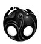

O que são encaixes de amuleto?
Os Encaixes de Amuletos são necessários para equipar os Amuletos. Amuletos diferentes exigem um número diferente de Encaixes. O Cavaleiro começa com 3 Encaixes. Mais 8 podem ser encontrados durante o jogo, totalizando 11 Encaixes. cada amuleto nescecita de uma quantidade de encaixes sendo de um encaixe até cinco encaixes sendo que o que precisa de cinco é um amuleto especial. e tambem um que não custa Encaixes.
Para que servem os Amuletos?
Os amuletos em Hollow Knight são acessórios especiais que oferecem vários bônus e habilidades especiais ao jogador. Eles são equipados utilizando encaixes, e só podem ser equipados e desequipados enquanto o jogador estiver sentado em um banco. Além disso, existe um estado chamado “Sobrecarregado”, que permite ao jogador equipar um amuleto que requer mais encaixes do que os disponíveis. No entanto, isso faz com que o dano recebido pelo jogador seja dobrado. Portanto, os amuletos servem para personalizar e melhorar as habilidades do jogador, permitindo diferentes estratégias e estilos de jogo. No entanto, eles devem ser usados com cuidado, pois a escolha e combinação de amuletos podem afetar significativamente a dificuldade e jogabilidade do jogo
amuletos existentes no jogo
| amuletos | funçoes |
|---|---|
| 
Melodia Despreocupada |
Um símbolo comemorando o começo de uma amizade. Contém uma música de proteção que pode defender o portador de danos(a chance de bloqueio reinicia para 0% toda vez que o Amuleto previne dano e aumenta com cada golpe tomado até um máximo de 90%. A chance média de bloqueio é 22,46%.). |

Marca de Orgulho |
Livremente dado pela Tribo Louva-a-Deus para aqueles que eles respeitam. Aumenta consideravelmente o alcance do ferrão do portador, permitindo-lhe atingir os inimigos de mais longe. |
| 
Benção de Joni |
Abençoado por Joni, a gentil herege. Transfigura os fluidos vitais para sangue vital azul. O portador terá uma carapaça mais saudável e poderá receber mais dano, porém ele será incapaz de se curar focando ALMA. |
|
Portador dos Sonhos |
Amuleto transitório criado para aqueles que usam o Ferrão dos Sonhos e coletam Essência. Permite ao portador carregar o Ferrão dos Sonhos mais rapidamente e coletar mais ALMA atingindo inimigos. |
| 
Ninho de Flukes |
Um Amuleto vivo que nasceu no intestino de uma Flukemarm. Transforma a magia Espirito sic Vingativo em uma horda de voláteis bebês flukes. |
| 
Carapaça de Baldur |
Protege o portador com uma carapaça dura enquanto estiver focando ALMA. A carapaça não é indestrutível e se quebrará se absorver muito dano. |
| 
Alma do Rei |
Amuleto sagrado simbolizando a união entre seres superiores. O portador irá lentamente absorver a ALMA ilimitada contida interiormente. Abre o caminho para um local de nascimento. |
| 
Coração Vazio |
Um vazio escondido interiormente, agora sem restrições. Unifica o vazio sob a vontade do portador. Esse Amuleto é uma parte do seu portador e não pode ser desequipado. |
Fato curioso sobre Hollow Knight
Você sabia que o personagem principal de Hollow Knight foi retirado de um projeto anterior da Team Cherry chamado Hungry Knight, que foi realizado em menos de 48 horas em um encontro de desenvolvedores? Isso é um exemplo interessante de como as ideias podem evoluir e se transformar ao longo do tempo! 😊
No desenvolvimento de Hollow Knight, as inspirações da Team Cherry foram jogos como zelda II,Super metroid e Castlevania: Aria of Sorrow, e você tambem sabia que O modelo de movimento em Hollow Knight veio das séries Mega Man e Mega Man X.
Top runners
em primeiro 1°lugar skate king com 31m 24s de LRT(load removed time)
video no qual ele alcançou 1°lugar
Caso queira ver diretamente no Youtubeclique aqui
já em 2°lugar temos lep com 31m 39s de LRT
video no qual ele alcançou 2°lugar
e por ultimo mas não menos importante temos jackmanmarcus com 31m 46s de LRT
video no qual ele alcançou 3°lugar
Caso queira ver diretamente no Youtubeclique aqui